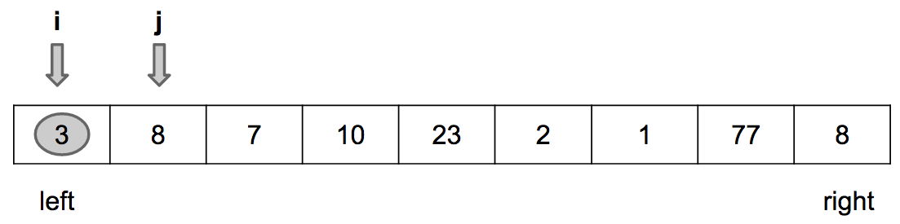
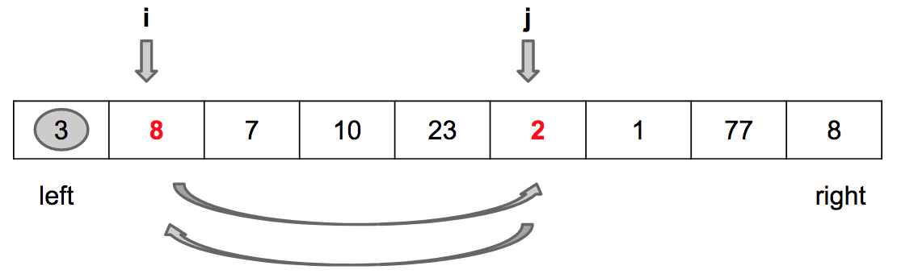
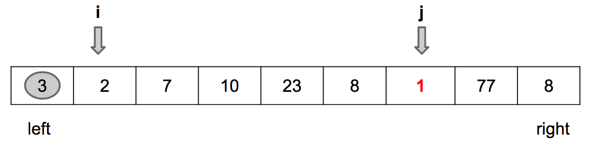
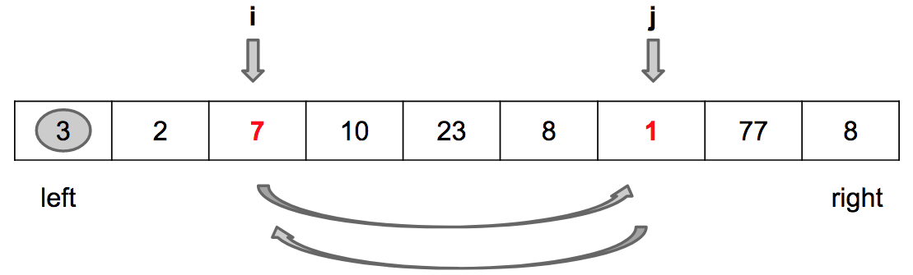
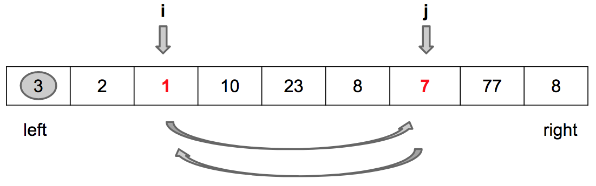
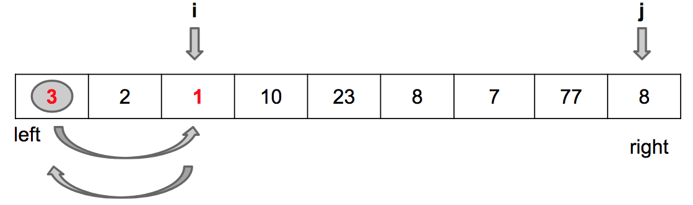
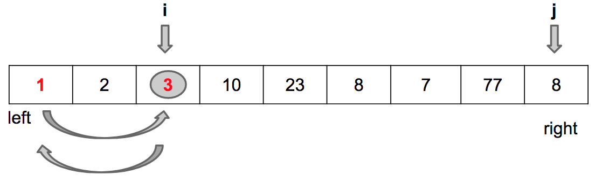

Ordenação por Comparação: Quick Sort
Quick Sort é um algoritmo eficiente de ordenação por divisão e conquista. Apesar de ser da mesma classe de complexidade do Merge Sort e do Heap Sort, o Quick Sort é na prática o mais veloz deles, pois suas constantes são menores.
O funcionamento do Quick Sort baseia-se em uma rotina fundamental cujo nome é particionamento. Particionar significa escolher um número qualquer presente no array, chamado de pivot, e colocá-lo em uma posição tal que todos os elementos à esquerda são menores ou iguais e todos os elementos à direita são maiores.
Particionamento
Vamos particionar o array $[3, 8, 7, 10, 0, 23, 2, 1, 77, 7]$. Saiba, não vou entrar em detalhes sobre como é feito o particionamento agora. Isso será feito mais adiante neste material. Neste momento minha preocupação é que você saiba o que é particionar, não como. Então, vamos ver o estado do array antes e depois de particionar. Como disse, precisamos escolher um pivot. Por ora, vamos sempre escolher o primeiro elemento do array. Ou seja, nosso pivot é o valor 3.
Antes do particionamento: [3, 8, 7, 10, 0, 23, 2, 1, 77, 7]
Depois do particionamento: [1, 0, 2, 3, 8, 23, 7, 10, 77, 7]
Note que todos os elementos à esquerda do pivot são menores ou iguais ao pivot e todos os elementos à direita do pivot são maiores. Isso não significa que os elementos à esquerda e à direita devem necessariamente estar ordenados. Apenas significa que o pivot está em sua posição e o problema de ordenar agora resume-se a resolver a esquerda dele e a direita dele, concorda?
Já que entendemos o que é particionamento, vamos agora ver como este algoritmo funciona. Há duas estratégias populares de particionamento: Lomuto e Hoare. Neste material nós vamos abordar a estratégia de Lomuto, que é mais simples. O particionamento Hoare é discutido em detalhes neste outro material.
A ideia do particionamento de Lomuto é identificar os elementos menores ou iguais ao pivot e colocá-los imediatamente à frente dele. Depois, no final, coloca-se o pivot à frente deles todos. Vamos ver um exemplo concreto para ver como funciona essa ideia.
Para o array $values = [3, 8, 7, 10, 0, 23, 2, 1, 77, 7]$, temos que $pivot = 3$. Vamos iterar no array identificando os elementos menores ou iguais a ele. O primeiro identificado é o valor 0.
values = [3, 8, 7, 10, 0, 23, 2, 1, 77, 7]
Nosso trabalho agora é colocar o valor 0 à frente do pivot. Então, trocamos esse valor com o valor 8 (imediatamente à frente de 3). Note, no estado parcial, que 0 ficou à frente de 3 e 8 assumiu o índice de 0.
values = [3, 0, 7, 10, 8, 23, 2, 1, 77, 7]
Acabou? Não. O próximo elemento menor ou igual ao pivot (3) é 2.
values = [3, 0, 7, 10, 8, 23, 2, 1, 77, 7]
Temos que trazer 2 para a frente de 3. Vamos fazer isso trocando este valor com o valor 7. Veja, no estado parcial, que agora os valores 0 e 2 estão à frente de 3.
values = [3, 0, 2, 10, 8, 23, 7, 1, 77, 7]
Acabou? Não. O próximo elemento menor ou igual ao pivot (3) é 1.
values = [3, 0, 2, 10, 8, 23, 7, 1, 77, 7]
Temos que trazer 1 para a frente de 3. Vamos fazer isso trocando este valor com o valor 10. Veja, no estado parcial, que agora os valores 0, 2 e 1 estão à frente de 3.
values = [3, 0, 2, 1, 8, 23, 7, 10, 77, 7]
E agora? Agora não há mais elementos menores ou iguais ao pivot para serem identificados. Todos os elementos menores ou iguais (0, 2 e 1) estão imediatamente à frente dele. Então, basta trocarmos o pivot (3) com o último deles (1).
values = [1, 0, 2, 3, 8, 23, 7, 10, 77, 7]
Feito. Agora 3 está em seu lugar, com todos os elementos menores ou iguais à sua esquerda e os elementos maiores à direita.
Então, agora sabemos o que é e como funciona o particionamento. Chegou a hora de analisar o código.
Implementação do Particionamento de Lomuto
...
public static int partition(int[] values, int left, int right) {
int pivot = values[left];
int i = left;
for (int j = left + 1; j <= right; j++) {
if (values[j] <= pivot) {
i+=1;
swap(values, i, j);
}
}
// troca pivot (values[left]) com i.
swap(values, left, i);
return i;
}
...Em primeiro lugar, vamos entender a assinatura do método particiona. Naturalmente, ele recebe como parâmetro o array a ser particionado. Recebe também dois índices válidos do array (left e right) que determinam os limites em que o algoritmo deve agir. Como o particionamento será usado dentro do contexto do Quick Sort, que é recursivo, precisamos controlar a faixa de valores em que o particiona será executado através destes índices. Claro, na primeira chamada, left = 0 e right = values.length - 1.
A primeira linha do método é a escolha do pivot. Estamos sempre escolhendo o elemento no primeiro índice como o pivot, por isso temos pivot = values[left].
Depois, lembre-se, precisamos iterar sobre o array procurando os elementos menores ou iguais e trocando-os com as posições à frente do pivot. Quem irá controlar a iteração é a variável j, enquanto i controla as trocas. Então, j varia sempre da segunda posição (left + 1), pois não precisamos comparar o pivot com ele mesmo, até a última posição do array (right). Enquanto isso, i começa na posição à frente do pivot j+1 e só é incrementado se um novo valor menor ou igual for encontrado.
Quando um valor menor ou igual ao pivot for encontrado (if values[j] <= pivot), efetuamos dois passos:
- Incrementar
i; - Trocar $values[i]$ por $values[j]$.
Repete comigo. Sempre que encontrarmos um valor menor ou igual ao pivot, incrementamos i e trocamos $values[i]$ por $values[j]$.
Quando encerrar a iteração, basta agora trocar $values[i]$ pela posição do pivot. Ou seja, trocamos $values[i]$ por $values[left]$.
Por fim, retornamos i, que é a posição final do pivot.
Para fixar bem, vamos ver um outro exemplo com figuras demonstrando o passo a passo.
Início da iteração: j = left + 1 e i = left
Encontrado o primeiro valor menor que o pivot

Passo 1: Incrementa i
Passo 2: Troca values[i] por values[j]
Encontrado um outro valor menor que o pivot
Passo 1: Incrementa i
Passo 2: Troca values[i] por values[j]
Fim da iteração (j == right)
Troca values[i] por values[left]
Quick Sort
Implementação
Você concorda que após uma execução do particiona o pivot está em sua posição na sequência? Isto é, se nossa missão for ordenar o array, não precisamos mais nos preocupar com o pivot, pois ele já está na posição correta. Precisamos, sim, nos preocupar com os elementos nos índices anteriores ao pivot, que estão no intervalo [left, i - 1] e com os elementos nos índices à frente do pivot, que estão no intervalo [i + 1, right].
O Quick Sort, então, é a execução de consectivos particionamentos. Efetua-se o primeiro levando em consideração todo o array (left = 0 e right = values.length - 1). Depois, leva-se em consideração a esquerda do pivot, ou seja, left = 0 e right = index_pivot - 1 e a direita do pivot (left = index_pivot + 1 e right = values.length - 1). Depois, o mesmo processo é feito com a esquerda e a direita dos novos pivots e assim por diante até que todo o array já tenha sido percorrido (left >= right).
public static void quickSort(int[] values, int left, int right) {
if (left < right) {
int index_pivot = partition(values, left, right);
quickSort(v, left, index_pivot - 1);
quickSort(v, index_pivot + 1, right);
}
}Vamos analisar a figura abaixo para visualizar a execução do Quick Sort para o mesmo exemplo que estávamos abordando na seção anterior.
Após a execução do primeiro particionamento temos este estado:

Note que há agora duas chamadas recursivas. Uma para a esquerda do pivot e outra para a direita do pivot. Cada chamada irá operar sobre os novos “lefts” e “rights”. Por isso o particiona recebe os índices em que deve executar a sua rotina. No exemplo acima, uma nova execução do particiona para a esquerda não irá alterar os valores porque eles já estão ordenados, mas a execução para a direita irá colocar o valor 10 em seu lugar e irá gerar uma nova rodada de duas execuções do particiona. De novo, esse processo acaba quando todas as verificações de left < right forem avaliadas com false.
Análise do Tempo de Execução
Lembra dos passos para determinar o tempo de execução de algoritmos recursivos?. O primeiro passo é encontrar a relação de recorrência. O Quick Sort possui uma chamada ao método particiona e duas chamadas recursivas. Diferentemente do Merge Sort, as chamadas recursivas podem não dividir o array ao meio sempre, concorda? Isso vai depender de onde o pivot ficar depois do particiona. Se ele ficar ao meio, naturalmente teremos duas chamadas recursivas para $T(n/2)$. Contudo, se ele ficar bem próximo ao início, por exemplo, teremos uma chamada recursiva para uma pequena porção à esquerda e uma chamada recursiva para uma porção bem maior (à direita). Então, por enquanto, vamos descrever a relação de recorrência como sendo o custo de particionar, somado ao custo da chamada para o array da esquerda e o custo da chamada para o array da direita:
$T(n) = T(|left|) + T(|right|) + \Theta(f(n))$
Vamos deixar as coisas mais claras, pois sabemos calcular o tempo de execução do particiona. Se aplicarmos o que já aprendemos no material introdutório sobre análise é facil descobrir que o particiona é $\Theta(n)$, onde $n$ é o tamanho do array, pois ele itera somente uma vez sobre todo o array. Então, podemos descrever a relação de recorrência do Quick Sort como:
$T(n) = T(|left|) + T(|right|) + \Theta(n)$
Agora precisamos discutir os termos $T(|left|)$ e $T(|right|)$. Você já entende que o tamanho de left e right depende do índice em que o pivot fica após o particionamento. Vamos discutir o pior caso, primeiro.
Pior caso
A execução do Quick Sort para o array $values = [1, 2, 3, 4, 5, 6, 7, 8, 9, 10]$ sempre particiona este array em duas porções cujos tamanhos são 0 e n - 1, respectivamente. Isso fica claro porque escolhemos sempre o pivot como sendo o primeiro elemento. Na primeira execução do particionamento ele já está em sua posição, pois o array está ordenado. Assim, chamamos recursivamente para a esquerda (vazio) e para a direita (2, 3, 4…10). Na segunda execução isso também é verificado, pois o 2 já está em seu lugar. Então temos a seguinte relação de recorrência:
$T(n) = T(n-1) + T(0) + \Theta(n)$, ou seja $T(n) = T(n-1) + \Theta(n)$
Agora sim podemos aplicar o segundo passo da análise de algoritmos recursivos, que é analisar a árvore de recursão. Esta árvore tem altura n - 1 e cada nível custa $n$ (particiona). Portanto, temos que o custo total é dado por $O(n^2)$.
No pior caso o Quick Sort é $O(n^2)$. Esse caso se manifesta quando o pivot sempre divide o array em duas porções de tamanho 0 e n-1, respectivamente.
Escolhendo bons pivots
É preciso deixar muito claro. O pior caso do Quick Sort é quando ele executa recorrentemente péssimas partições. Uma péssima partição no nosso contexto é colocar o pivot em um lugar que não há elementos à sua esquerda e que há $n - 1$ elementos à sua direita, por exemplo. Como vimos, um exemplo concreto deste caso ocorre quando o array já está ordenado e sempre escolhemos o pivot como sendo o primeiro elemento ou quando está ordenado em ordem reversa e fazemos essa mesma escolha de pivot.
Portanto, o pior caso é raro, concorda? Ele precisa de duas condições: o array já estar ordenado e nós escolhermos sempre o primeiro elemento como pivot.
Escolhendo um pivot melhor. Nossa ruina até aqui foi escolher sempre o primeiro elemento como o pivot e, como o array está ordenado, o pivot acarretava em um sucessão de particionamentos ruins. Vamos discutir duas maneiras de escolher melhores pivots: uma aleatória e a mediana de três.
Escolhendo o pivot aleatoriamente
Se escolhermos o pivot aleatoriamente, qual a probabilidade dele ser o primeiro e, por consequência, o pior? $p = 1/n$ certo? Para cairmos no pior caso adotando essa estratégia teríamos que escolher sempre o pior pivot, cuja probabilidade seria dada por $p = 1/n * 1/(n-1) * 1/(n-2)…$. Ou seja, é possível que aconteça, mas teríamos que ser muito azarados :)
Escolher aleatoriamente o pivot é uma boa estratégia para diminuir significativamente a probabilidade de ocorrência do pior caso.
O código do particiona que discutimos foi feito para escolher sempre o primeiro elemento. Como seria a modificação? Fácil. Basta escolher aleatoriamente, trocar com a primeira posição do array e então executar o código que vimos anteriormente. Essa mudança foi implementada pelas 3 primeiras linhas do código abaixo. O restante do método continua o mesmo.
...
public static int partition(int[] values, int left, int right) {
int range = right - left + 1;
int rand_pivot_index = (int)(Math.random() * range) + left;
// troca o valor aleatório escolhido com a primeira posição
swap(values, left, rand_pivot_index);
int pivot = values[left];
int i = left;
for (int j = left + 1; j <= right; j++) {
if (values[j] <= pivot) {
i+=1;
swap(values, i, j);
}
}
// troca pivot (values[left]) com i.
swap(values, left, i);
return i;
}
...Escolhendo o pivot através da mediana de três
A mediana é uma medida de tendência central que divide uma sequência de inteiros ao meio. Então a mediana de todos os elementos a array seria o nosso pivot perfeito, não é? O problema é que o custo para calcular a mediana de um array é $O(n)$ e não queremos adicionar essa complexidade para apenas escolher um pivot e depois ter que executar o particionamento. Então o que fazemos é uma aproximação “grosseira” da mediana. Calculamos a mediana entre três representantes do array: o primeiro elemento, o elemento do meio e o último elemento.
Essa estratégia evita o caso de escolhermos recorrentemente um péssimo pivot. Por exemplo, para o array $values = [1, 2, 3, 4, 5, 6, 7, 8, 9, 10]$ temos 1, 5 e 10 como o primeiro, o elemento central o último elemento, respectivamente. A mediana entre esses elementos é o 5. Portanto, essa seria a nossa escolha de pivot. Veja que executar o particionamento com ele é uma escolha bem melhor do que particionar com o primeiro elemento.
Escolher pivot como sendo a mediana entre o primeiro elemento, o elemento central e o último elemento é uma boa estratégia para diminuir significativamente a probabilidade de ocorrência do pior caso.
Novamente, a mudança no código do particiona é somente na escolha do pivot. Implementamos essa escolha através do método pickMedianOfThreePivot que retorna o índice da mediana entre os três. O particiona invoca este método, troca o primeiro elemento pela mediana e executa o algoritmo clássico de Lomuto que já vimos detalhadamente.
...
public int pickPivotIndex(int[] values, int left, int right) {
int mid = (left + right) / 2;
int[] sorted = {values[left], values[mid], values[right]};
Arrays.sort(sorted);
if (sorted[1] == values[left]) return left;
else if (sorted[1] == values[mid]) return mid;
else return right;
}
...Melhor caso e Caso médio
Qual seria o melhor caso de particionamento? Seria um que se aproximasse do Merge Sort, em que sempre dividimos o array pela metade. Ou seja, se o pivot sempre ficar no meio do array, teremos uma árvore binária na recursão em que a esquerda tem metade do tamanho do array e a direita também tem a metade do tamanho. Essa árvore, como já vimos, tem a altura mínima, isto é, $O(\log n)$. Então, o custo do melhor caso seria $\log n$ execuções do particiona, que é $O(n)$. Como resultado, o melhor caso do Quick Sort é $O(n * \log n)$.
No melhor caso o Quick Sort é $O(n * \log n)$. Esse caso se manifesta quando o pivot sempre divide o array em duas porções iguais.
Espera aí. O Melhor caso é bem raro também, não é? Eu teria que ser muito sortudo para o pivot sempre cair no meio do array depois do particionamento.
Sim. É verdade. Contudo, o caso médio do Quick Sort é muito próvavel de acontecer e esse caso médio é também $O (n * \log n)$. A teoria nos diz que mesmo alternando péssimos particionamentos (pivot longe da metade do array) e bons particionamentos (pivot próximo à metade do array), o algoritmo ainda seria $O (n * \log n)$.
Na verdade, vamos além, se o particiona sempre dividir o array em duas partes de tamanho 9⁄10 e 1⁄10, respectivamente, o que parece ruim, ainda sim a execução do Quick Sort é $O (n * \log n)$. Esse tema é discutido amplamente no Capítulo 7 do livro Algoritmos: Teoria e Prática de Cormen et. al.
Se aplicarmos as técnicas de escolha do pivot que vimos acima, temos uma alta probabilidade de não escolher recorrentemente péssimos pivots e, por consequência, uma alta probabilidade de cairmos no caso médio, que é $O(n * \log n)$.
No caso médio o Quick Sort é $O(n * \log n)$. Esse caso tem sempre uma alta probabilidade de se manifestar, mesmo que haja algumas péssimas escolhas pivot durante a execução do algoritmo.
Estabilidade e uso de memória
O Quick Sort é in-place, mas não estável.
O Quick Sort não é um algoritmo estável. O modo como o particiona é implementado permite que elementos iguais troquem de posições relativas durante a sua execução.
É possível implementar uma versão estável do Quick Sort, mas para isso, ao invés de trocar o pivot diretamente com a primeira posição, o algoritmo deve fazer sucessivas trocas para “afastar” o pivot até a posição desejada – um processo semelhante à inserção ordenada. Essa implementação, contudo, piora significativamente o desempenho do Quick Sort.
O Quick Sort é in-place. O uso de memória auxiliar é constante em relação ao tamanho do array.
Resumo
Quick Sort é um algoritmo eficiente de ordenação.
O algoritmo baseia a ordenação em sucessivas execuções de particionamento, uma rotina que escolhe um pivot e o posiciona no array de uma maneira em que os elementos menores ou iguais ao pivot estão à sua esquerda e os maiores estão à sua direita.
O algoritmo de particionamente é $O(n)$.
Há dois algoritmos populares de particionamento: o de Lomuto e o de Hoare.
O particionamento Hoare, embora mais complexo, é na prática mais eficiente que o de Lomuto.
No caso médio e no melhor caso, o Quick Sort é $O(n*\log n)$.
No pior caso, o Quick Sort é $O(n^2)$.
O pior caso do Quick Sort é raro e é causado por sucessivas péssimas escolhas de pivot quando o array já está ordenado. Para remediar este problema, há estratégias para escolher melhor o elemento que será o pivot do particionamento, entre elas:
- Escolher o pivot aleatoriamente.
- Escolher o pivot como sendo a mediana entre o primeiro, o elemento central e o último elemento do array.
O caso médio é muito mais provável do que o pior e o melhor caso.
Apesar de estar na mesma classe de complexidade do Merge Sort e do Heap Sort, há experimentos que demonstram que o Quick Sort em seu melhor caso e caso médio é por volta de 3x mais eficiente que o Merge Sort, porque ele contém constantes menores.
O Quick Sort não é estável.
O Quick Sort é in-place.
Notas
Leia o material sobre o método de particionamento criado por Tony Hoare.
No Capítulo 7 do livro “Algoritmos: Teoria e Prática” de Cormen et. al. há uma discussão mais detalhada sobre a análise do Quick Sort.